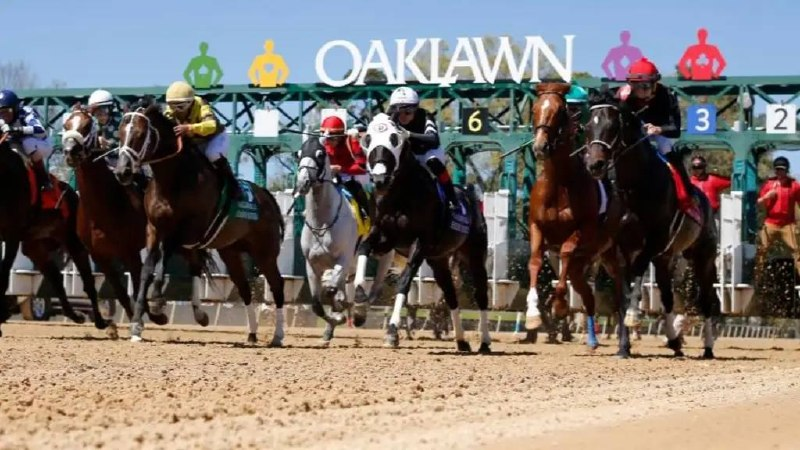

Doublecents se impone con autoridad en su segunda salida en Oaklawn Park
El hijo de Goldencents arrolló a sus rivales en el cierre de temporada del hipódromo de Arkansas tras haber firmado un segundo puesto en su debut en abril.

Doublecents confirmó el sábado las buenas sensaciones dejadas en su estreno al imponerse de forma rotunda en una carrera de maiden disputada en la jornada de clausura de Oaklawn Park. El pupilo de Goldencents había debutado el 11 de abril sobre seis furlongs terminando en segunda posición frente a Munnings Challenge, y en esta segunda oportunidad demostró su progresión arrollando literalmente al resto del lote.
La exhibición del ejemplar convierte a Goldencents en uno de los sementales con mayor proyección de la temporada, sumando así su tercer representante destacado del año. El trazado de seis furlongs volvió a ser el escenario elegido para medir las posibilidades del potro, que esta vez no dejó lugar a dudas sobre su superioridad. La victoria llega en un momento clave del calendario, coincidiendo con el cierre de la temporada en el recinto de Arkansas, tradicional referencia de las carreras de pura sangre en el circuito estadounidense.
— Redacción de Galope al Día